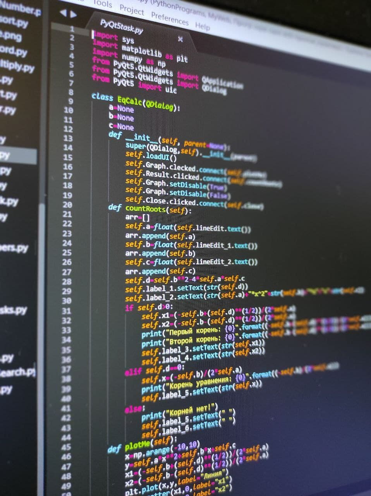

Программирование — процесс и искусство создания компьютерных программ с помощью языков программирования.
Программирование — процесс и искусство создания компьютерных программ с помощью языков программирования.
Программирование сочетает в себе элементы искусства, науки, математики и инженерии.
Программная инженерия – это область компьютерной науки и технологии, которая занимается построением программных систем, настолько больших и сложных, что для этого требуется участие слаженных команд разработчиков различных специальностей и квалификаций.
Си++ (англ. C++) — компилируемый строго типизированный язык программирования общего назначения. Поддерживает разные парадигмы программирования: процедурную, обобщённую, функциональную; наибольшее внимание уделено поддержке объектно-ориентированного программирования.
Python — высокоуровневый язык программирования общего назначения, ориентированный на повышение производительности разработчика и читаемости кода. Синтаксис ядра Python минималистичен. В то же время стандартная библиотека включает большой набор полезных функций.
JavaScript обычно используется как встраиваемый язык для программного доступа к объектам приложений. Наиболее широкое применение находит в браузерах как язык сценариев для придания интерактивности веб-страницам.